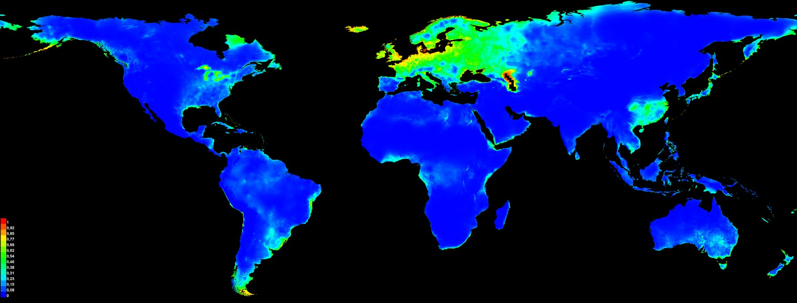
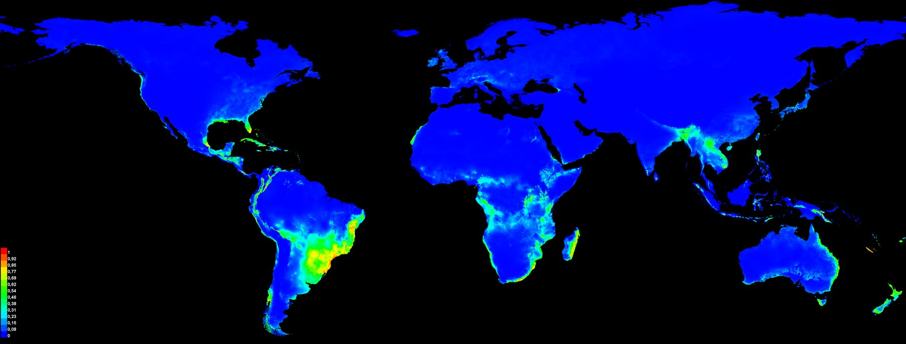
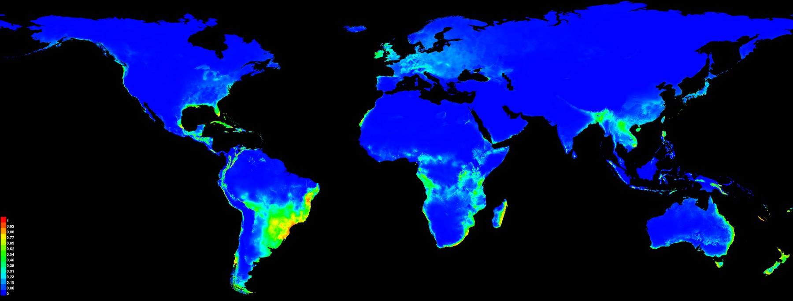
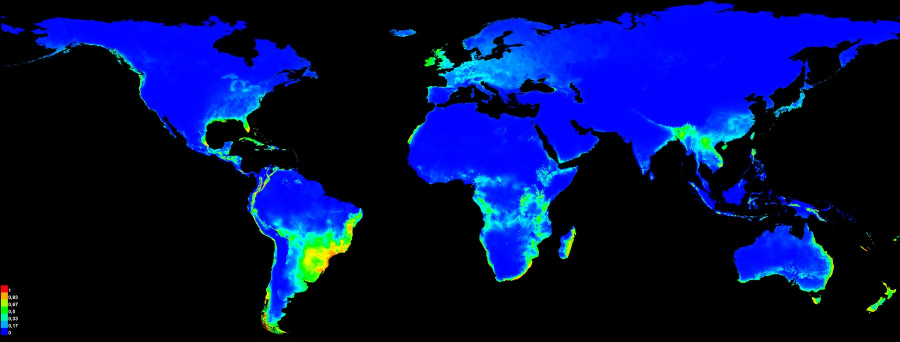
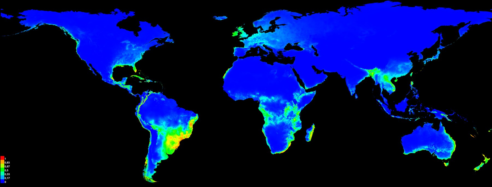
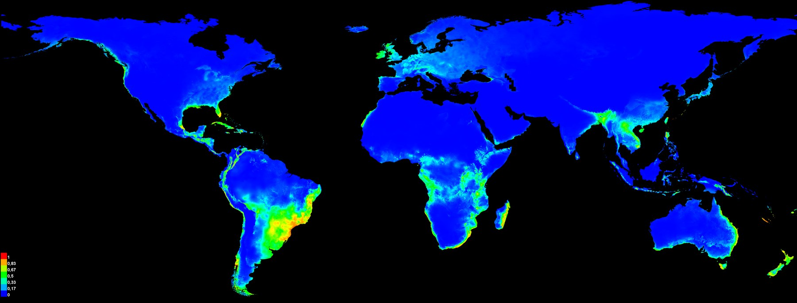
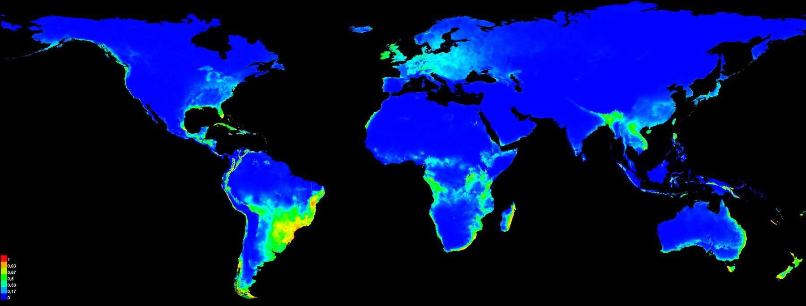

Ceratium furcoides: where an invasive microalga can spread
Niche models that show the niche shift during the global invasion and project future risk over existing and planned reservoirs.
- Period
- 2020–2021
- Collaboration
- Rafael L. Macêdo and co-authors
- My role
- Niche modelling, climate projections and maps
- Tools
- MaxEnt · Dinamica EGO · ArcGIS Pro

Current climate · calibrated with native-range records · mean of replicates

Current climate · calibrated with invaded-range records · mean of replicates

Current climate · calibrated with all records · mean of replicates

Future · SSP1-2.6 · MIROC6 climate model · median of replicates

Future · SSP2-4.5 · MIROC6 climate model · median of replicates

Future · SSP3-7.0 · MIROC6 climate model · median of replicates

Future · SSP5-8.5 · MIROC6 climate model · median of replicates
Model calibrated only with records from the native range. It predicts low suitability where the species now invades, such as south-eastern South America.
Model calibrated only with records from the invaded ranges. The contrast with the native range is the niche shift described in the Hydrobiologia paper.
Model with all records, the basis for the future projections. Suitability is highest in south-eastern South America.
Low-emission scenario. Switch between scenarios to see how the suitable area changes with warming.
Intermediate emission scenario.
High-emission scenario.
Very high emission scenario.
Original MaxEnt maps. The projections in the paper combine several climate models; here, MIROC6 lets you compare the four scenarios.
The problem
Ceratium furcoides is a freshwater dinoflagellate native to temperate regions that forms blooms linked to fish kills and declining water quality. In South America it spreads through reservoirs. Two questions guided the work: does the species occupy the same climatic niche in invaded areas as in its native range? And where could it expand with climate change and the construction of new dams?
The data
- Occurrence records in the native range and in the invaded ranges.
- WorldClim bioclimatic variables for the present and for the CMIP6 scenarios.
- Locations of existing and planned large dams.
The method
- Three MaxEnt calibrations: native range only, invaded ranges only and all records.
- Comparison of the native and invaded niches.
- Projection to four SSP scenarios with up to nine global climate models, in 34 combinations, summarized as consensus maps per scenario.
- Overlay of suitable areas with existing and planned large dams.
The result
The species’ fundamental niche shifted during the global invasion. By 2041–2060, suitable areas tend to expand and overlap with existing and planned large dams.
Because the species can establish from a single cell and forms resting stages, the papers recommend early detection and mitigation in the highest-risk basins.
Publications
- Macêdo RL, Franco ACS, Russo P et al. (2021). Climate and landscape changes enhance the global spread of a bloom-forming dinoflagellate related to fish kills and water quality deterioration. Ecological Indicators 133: 108408. doi ↗
- Macêdo RL, Russo P, Corrêa RF et al. (2021). The drifting dinoflagellate Ceratium furcoides: fundamental niche shift during global invasion. Hydrobiologia 848: 2105–2117. doi ↗